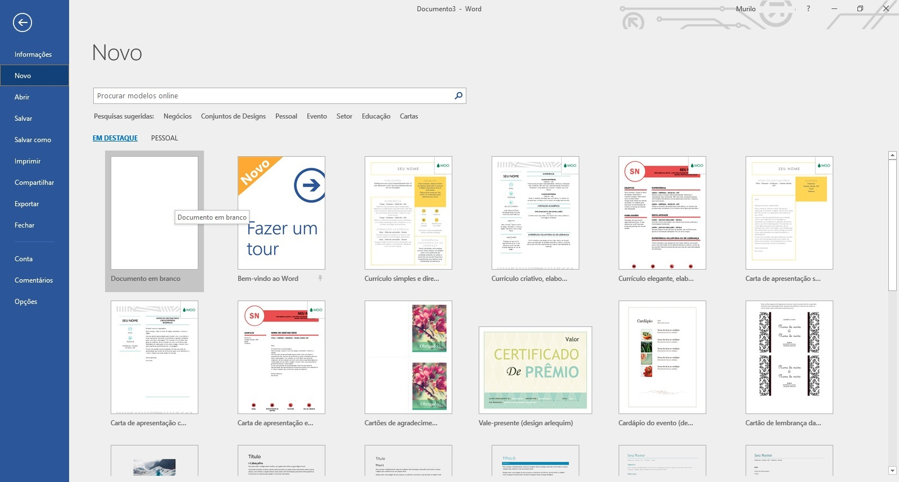
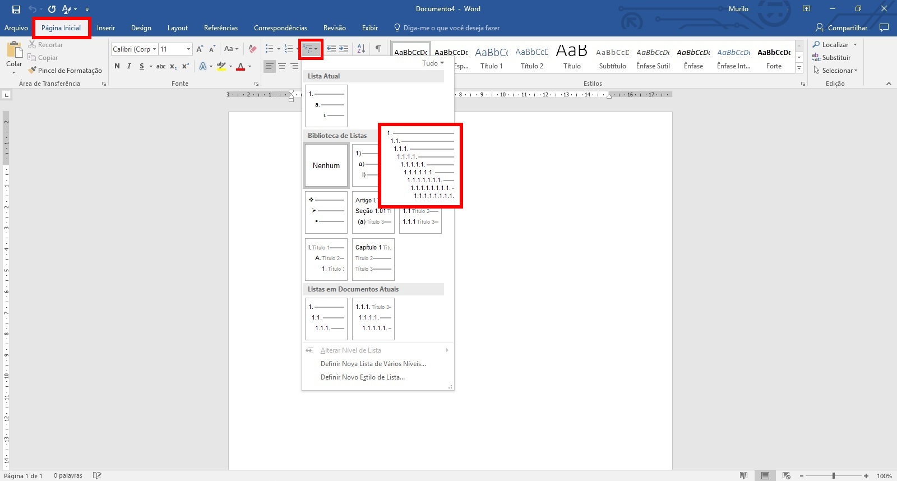
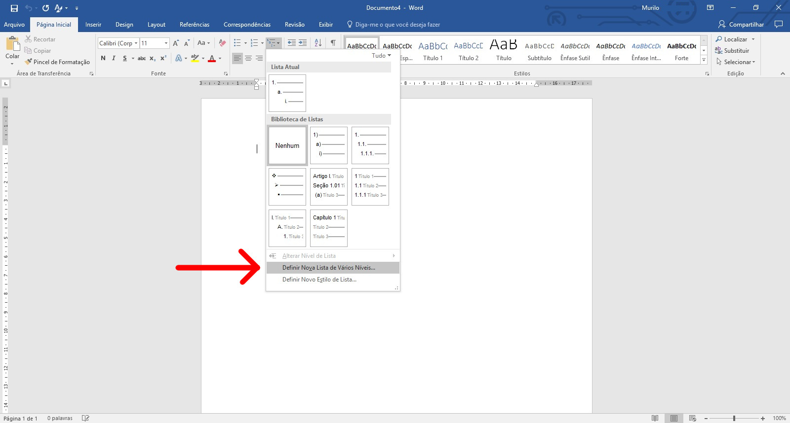
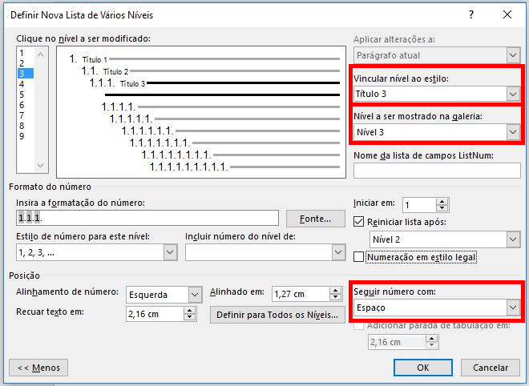

Numeração dos títulos
Crie um novo documento.
Na coluna esquerda, clique em Novo.
No painel da direita, clique em "Documento em branco".
Veja a Figura 1.

Selecione a aba "Página Inicial".
Clique no terceiro ícone que ao parar o mouse sobre ele aparece a descrição "Lista de vários níveis".
Clique no terceiro ícone indicado pelo retângulo de cor vermelha.
Veja Figura 2.

Em seguida clique em "Definir Nova Lista de Vários Níveis...".
Veja Figura 3.

Surge a caixa de diálogo como na Figura 4. (Detalhe da tela)
Se necessário clique no botão "Mais >>" para ampliar as opções (indicada pelo retângulo de cor vermelha).
Observação: Repare no trapézio de cor vermelha que a numeração está configurada com a quantidade correta de níveis.
Todos os estilos de números são 1, 2, 3, ...

Repare que o nível 1 está selecionado (cor azul).
No primeiro retângulo: "Vincular nível ao estilo:" - Selecione Título 1
No segundo retângulo: "Nível a ser mostrado na galeria:" - Selecione Nível 1
No terceiro retângulo: "Seguir número com:" - Selecione Espaço

Repare que o nível 2 está selecionado (cor azul)
No primeiro retângulo: "Vincular nível ao estilo:" - Selecione Título 2
No segundo retângulo: "Nível a ser mostrado na galeria:" - Selecione Nível 2
No terceiro retângulo: "Seguir número com:" - Selecione Espaço

Repare que o nível 3 está selecionado (cor azul)
No primeiro retângulo: "Vincular nível ao estilo:" - Selecione Título 3
No segundo retângulo: "Nível a ser mostrado na galeria:" - Selecione Nível 3
No terceiro retângulo: "Seguir número com:" - Selecione Espaço

Ao clicar no botão "Ok" resulta na Figura 8.
Apague o texto e execute os testes como mostrado nas figuras seguintes.
Como sugestão escreva 3 linhas para verificar se os estilos foram configurados corretamente.
Para o texto "Nível 1" clique no estilo "Título 1".
Veja Figura 9.

Para o texto "Nível 2" clique no estilo "Título 2".
Veja Figura 10.

Para o texto "Nível 3" clique no estilo "Título 3".
Veja Figura 11.